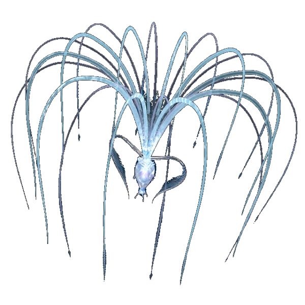

 Entrer au coeur de Pandora
Pandora 

Pandora est une planète du système Alpha Centauri A, et
le satellite de Polyphème. Elle est semblable à la Terre
à première vue, mais elle en est bien différente sur bien
des aspects, tel que son atmosphère, sa faune, sa flore,
sa population, etc... Elle regorge d'Unobtanium, ce qui
explique la présence humaine sur l'exo-lune.
Pandora est un satellite de la planète gazeuse
géante Polyphème qui orbite autour d'Alpha Centauri
A dans la constellation du Centaure. C'est le système
planétaire le plus proche de nous dans l'univers.
Découverte par les premières expédition interstellaires
25 ans plus tôt en 2129, Pandora est comparable à la Terre
d'il y a bien longtemps, recouverte de forêts luxuriantes
et de grands animaux sauvages, sans la moindre trace de
pollution. Pandora est la seule source d'Unobtanium connue
pour les humains.
C'est l'une des découvertes les plus importantes faite
depuis une centaine d'années. A partir de ce moment,
la RDA, une société minière qui détient le monopole de
l’Unobtanium, y envoie des ressources humaines et
matérielles, qui permet la colonisation de la
poitation intensive. Les relations entre les hommes
et les Na’vis sont d’abord amicales mais s’enveniment
suite à une tuerie, ce qui aboutit, par voie de
conséquence, à la destruction de l'Arbre-Maison
des Omaticayas. Quelques jours plus tard, la bataille
dans les montagnes Hallelujah est décisive et permet
l’expulsion des humains. Pandora Habrite une multide de
créature notamment le peuple des Na'Vi.
Les Na'Vi
Les Na'vis sont les seules espèces extraterrestres connues
montrant des capacités intellectuelles proches de celles
des humains. Bien que leur société soit restée à l'ère
néolithique, ils ont su développer une culture complexe
basée sur une profonde connexion spirituelle entre eux,
avec leur lune, ainsi qu'avec la divinité Eywa. Ce sont
d'incroyables artistes, qui célèbrent l'interconnexion
de la nature à travers des contes, des chants, des danses
et l'artisanat.
Ces chasseurs sont passés maitres dans l'art de la chasse
et de la cueillette. A bien des égards, le corps des Na'vis
ressemble à celui des humains (et est attirant, même au point
de vue des humains). Leur taille est fine et élancée. Ils ont
des épaules larges, taillées en forme de V. Leur cou est deux
fois plus long qu'un cou humain. L'ensemble de leur corps est
plus mince que le corps humain et n'est pas sans rappeler les
Masaï et les Watusi (Indigènes Africains). Leur musculature,
quant à elle, est parfaitement définie et, malgré leur
morphologie svelte, les Na'vis ne sont pas maigres (leur
force équivaut à peu près à 4x la force humaine). Leurs
yeux en forme d'amande, semblables à ceux des chats, sont
grands et incroyablement sensibles aux différentes variations
de lumière. Pour équilibrer leur long torse et leurs grandes
jambes, les Na'vis possèdent une longue queue qui leur permet
de saisir des objets, comme le lémurien. En plus de ce déplacer
sur la terre ferme, ils peuvent évoluer dans les arbres, de
branches en branches.
La population est restée stable grâce à l'abondance de la
faune et de la flore sur Pandora, où la théorie de Darwin
concernant l'évolution ne s'est pas toujours vérifiée.
En effet, les études indiquent que la population Na'vi a
peu varié au fil du temps. L'accès quasiment illimité aux
ressources naturelles de la planète a également permis de
restreindre (mais pas d'empêcher) les conflits entre les
différents clans Na'vis.
La Faune
Elle abrite de nombreuses espèces animales. Les créatures
de Pandora rappellent plus
ou moins certaines espèces
terriennes (le Marteaureau Titanothère qui rappellent les
rhinocéros, les loups-vipères qui rappellent les hyènes,…),
mais leur taille est bien supérieure. Peut être en raison
de l’atmosphère ou de l’environnement de la planète, la
plupart des animaux ont pour caractéristique six pattes.
Ils ne connaissent pas la chaine alimentaire. C’est ainsi
que l’héxapède ou le Métabête sont souvent chassés pour
leur viande. Les Stingbats, volatiles à l’intelligence
limitée, sont souvent des victimes. Au sommet de la chaine,
on retrouve le thanator pour la partie terrestre et le
Grand Leonopteryx pour les airs. La plupart des animaux,
pour survivre sur Pandora, ont apprit à se défendre,
mais d’autres en revanche sont très pacifistes, comme
les prolémuris. Des animaux peuvent être élevés par les
Na’vis, comme le tapirus mais surtout les equidius et
les banshees qu’ils domptent pour les monter.
Notons enfin que toute les créatures et les Na’vis
peuvent faire le lien, ce qu’ils appellent « Tsaheylu »,
leur permettant de créer un lien entre eux.

Une planète magnifique mais dangeureuse !
Mais Pandora est dangereuse. D'une part à cause de son atmosphère toxique pour l'Homme et d'autre part à cause de la plus faible gravité qui y est présente. Tout y est plus grand et paraît donc, aux yeux de l'Homme, gigantesque. Les habitants de cette planète souvent sous-estimés par les humains sont des guerriers accomplis. On les appelle les Na'vis. Même si leur vision nocturne est faible, la phosphorescence les aides et leur couleur bleue les camoufle lors des rares nuits. Ils sont interconnectés avec les plantes et forment tous ensemble un large réseau de vie, comme le réseau neuronal d'un cerveau. Une sorte de conscience unique au-dessus des consciences individuelles. Cet aspect est méconnu de l'Homme, voire surnaturel pour lui.

Pandora en image